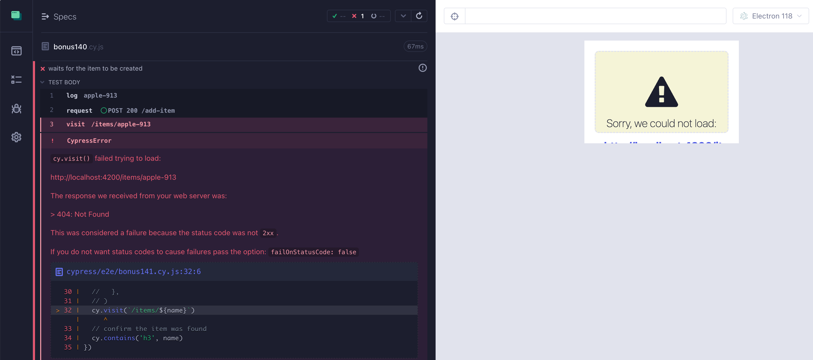
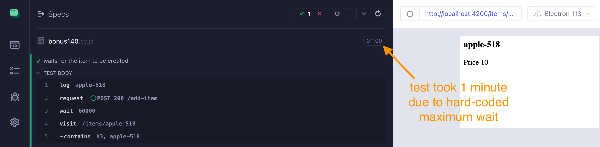
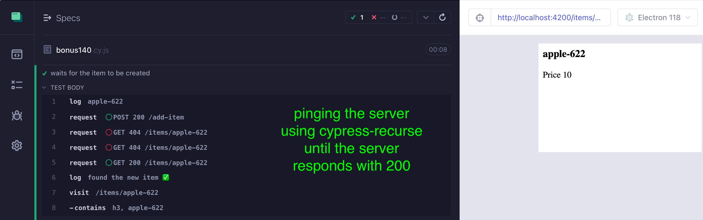
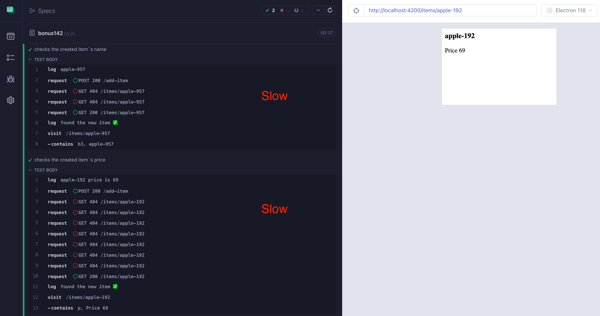
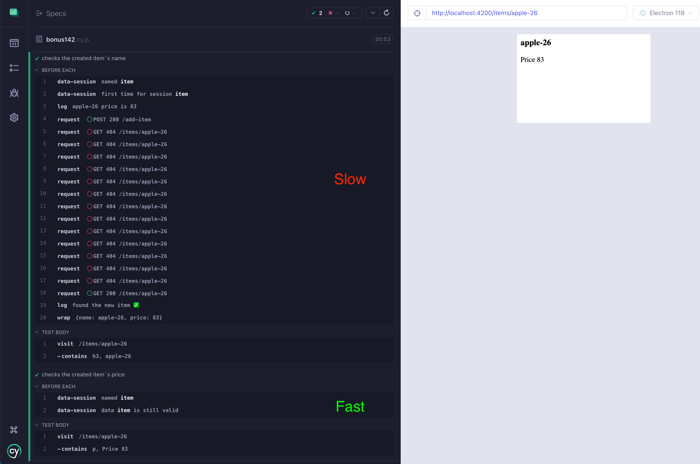
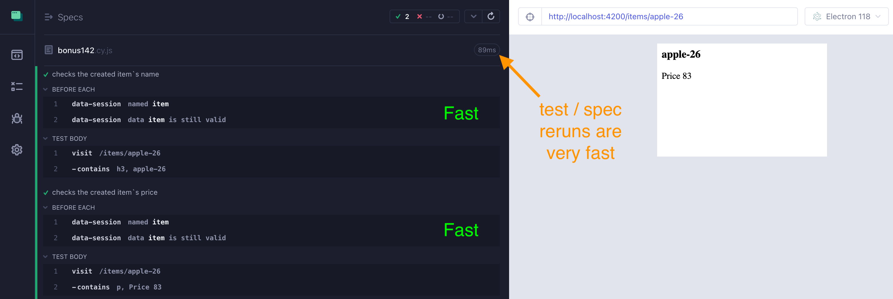
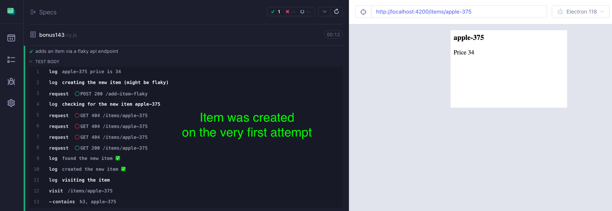
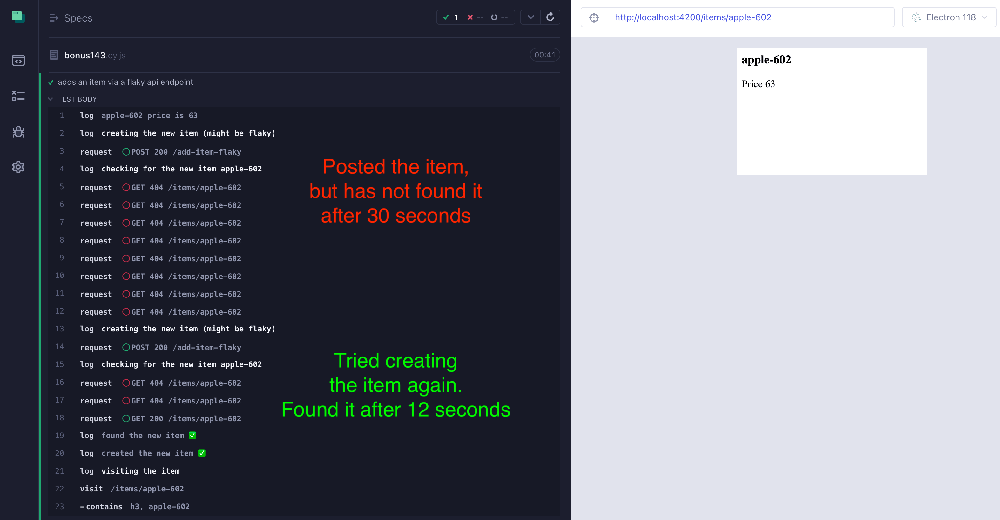

Imagine you are testing an item's HTML page. You need an item, and to remove any dependencies, you create the item from the test itself. To create an item, you need to make a network request to the API endpoint. You can make the request using the standard cy.request command:
1 | // make the item name unique |
If the item is created during the network call, everything is peachy. Cypress test continues after the cy.request('POST', '/add-item', item) finishes, thus by the tim we visit the item's page, it is ready.
What happens if the item is created asynchronously? What happens if the cy.request('POST', '/add-item', item) call simply starts the item creation and returns? How do we know when we can visit the item's page?
🎓 This blog post shows how to:
- ping an API endpoint instead of hard-coded wait
- cache the item to avoid re-creating it
- deal with a flaky testing API endpoint
Slow item creation
Imagine the item is created after some delay. Normally, an item is created within a second, but can take up to a minute. If we try visiting the item's page with cy.visit('/items/${name}'), the test fails with a 404 status code.

We need to "wait" somehow in our test for the item to be ready. We can hard-code the maximum sleep period of 1 minute:
1 | cy.request('POST', '/add-item', item) |
Oops, the server logs show that the item was ready after 16 seconds, yet the test ran for 1 minute
1 | will add { name: 'apple-518', price: 10 } to the database after 16 seconds |

We need a more intelligent way of know when the item is ready. We can ping the item's page every couple of seconds. Once the ping returns 200, we know the page is ready and we can use cy.visit('/items/${name}') to load the page. The best way to do something periodically in Cypress is via my plugin cypress-recurse. Here is the test pinging the page every 4 seconds and immediately continuing when the page responds:
1 | // https://github.com/bahmutov/cypress-recurse |
The item was created after 4 seconds, according to the server logs
1 | will add { name: 'apple-622', price: 10 } to the database after 4 seconds |
The test took 8 seconds total (since we have 4-second ping interval)

Ok, the test is much faster. But what if we can eliminate waiting completely?
🎁 This blog post is based on a series of hands-on lessons in my online advanced course Cypress Network Testing Exercises. In particular, the blog sections are based on the lessons in the "Bonus 14x" series.
Skip item creation using data caching
If we create an item in one test, it is probably likely that we create a similar item in another test.
1 | // https://github.com/bahmutov/cypress-recurse |
Each test creates its own item, which might be slow.

Do we need a completely separate item for the second test? Probably not. We could give the item a unique name AND price to avoid accidentally checking some matching data, but we could reuse the same item.
1 | // make the item name unique |
The challenge is to write the independent tests while caching the single item:
- we should create the item if it does not exist yet
- if the item exists, we simply visit it
- it should work not matter if we run the first test only, the second test only, or both tests
I wrote plugin cypress-data-session specifically to solve this problem. In our case, we can do the following:
1 | // https://github.com/bahmutov/cypress-recurse |
Our data session setup function yields an object with the unique name and price. This object is stored in the Cypress alias "item" (the data session name) and available this this.item property when we use the it(..., function () { ... }) tests.
The first time we run this spec, we can see a much faster second test, since it simply reuses the cached in memory data item.

But the biggest payoff happens when we press the "R" button or click the test re-run button: the spec is blazingly fast, finishing in just 81ms in this case; all data is already been created.

Cypress recurse and data session plugins are pretty powerful for real-world testing.
Flaky test creation
Now let's consider the last problem. What if the item creation API is flaky and can simply fail? We don't want to fail the test for the item's page; we want to overcome the flake. We want to retry creating the item. I recommend a two-level recursion for this:
- use the code we already wrote to ping the item to know when it is ready
- disable failing on timeout when checking the item
- retry creating the item if pinging fails
I typically have two utility functions checkItem and createItem to hide the messy details:
1 | // https://github.com/bahmutov/cypress-recurse |
Look inside the createItem function: it makes the request to the POST /add-item-flaky endpoint and yields the result of checking the item's existence via checkItem. That function simply pings the item periodically, yielding true or false, but without failing if the item is not found. If the result is true, we are good, the item i there. Else we try creating the item using the flaky API endpoint again.
The code work great with our test
1 | it('adds an item via a flaky api endpoint', function () { |
Here is our test during a run when the item was created on the very first attempt

And here is the same test on a run when the item creation timed out and the logic in the createItem function had to create it again

Like my girl Aaliyah said: "If at first you don't succeed, dust yourself off and try again"